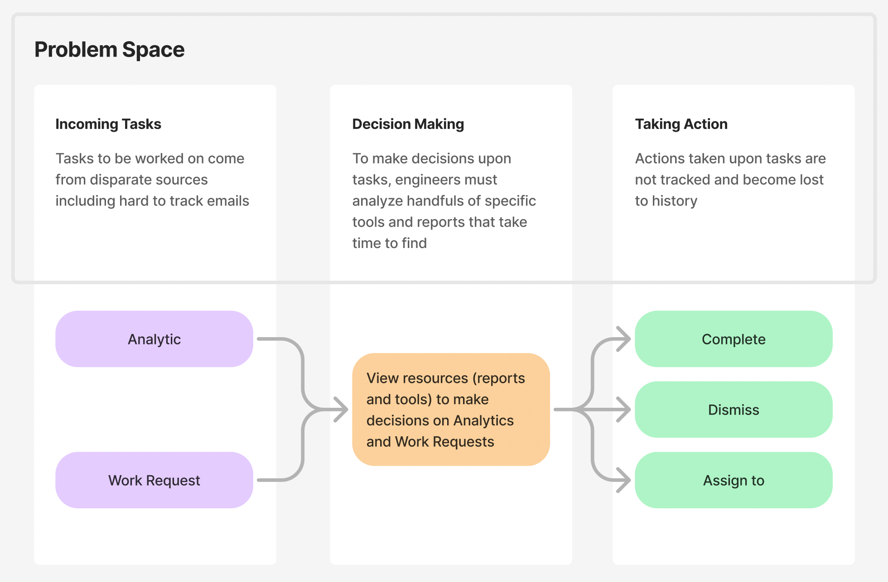
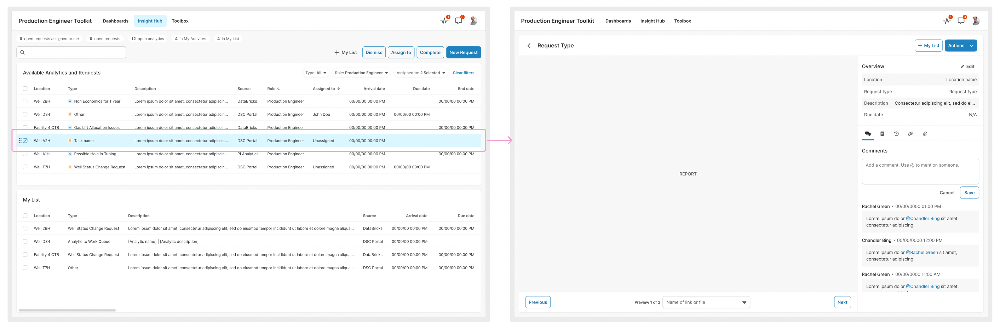
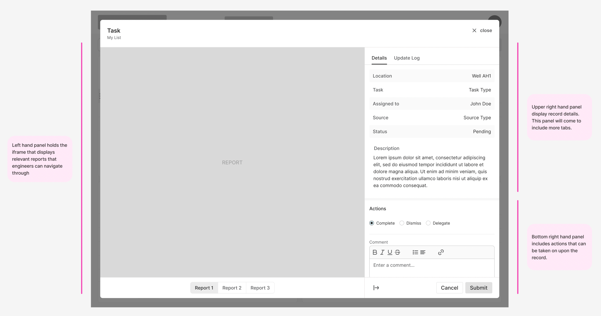
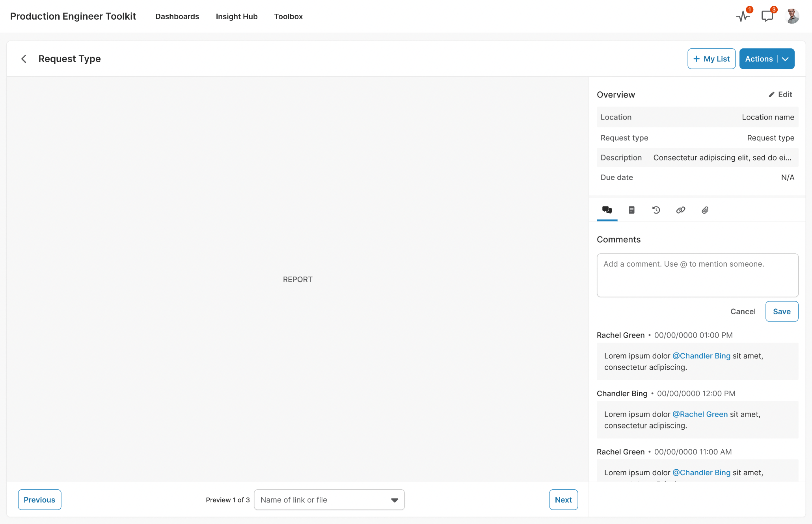
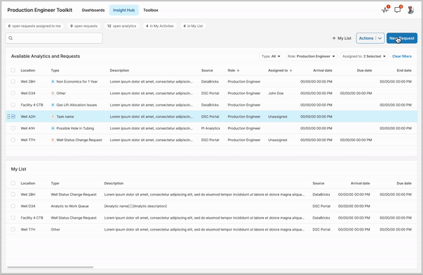

Production Engineer Toolkit
To streamline and simplify the workflow of production engineers, we created a toolkit aimed at consolidating task management and report access into a single, user-friendly platform. Production engineers often face information overload due to fragmented tools and multiple reporting systems. By centralizing these elements, we aim to enhance productivity, improve information access, and ensure actionable tasks are tracked seamlessly.
Client
A leading oil and gas company
Role
UX Designer
Team
UX Designer
Product Owner
Business Analyst
3 Developers
QA Tester
Timeframe
February 2024 - Present
Problem Space
Production engineers receive tasks from disparate sources, including hard-to-track emails and various tools. Each task requires thorough review of multiple reports before a decision can be made.
This fragmented workflow often leads to information overload, with engineers managing multiple open windows and tabs. Additionally, actions taken on tasks are rarely tracked, causing them to become lost to history and making it difficult to monitor progress.
Solution
The goal was to create a centralized application view where tasks, reports, and necessary tools are accessible in one place. This solution also had to meet business requirements for data tracking while respecting engineers' personalized workflows.
- Centralized Task Management Displays table of incoming analytics and request tasks, providing a clear overview of all actionable items in one place.
- Drill-Down Capability Allows users to click on a record to view a detailed page with all relevant information.
- Report Integration Embeds reports within an iframe on the detail page, enabling users to navigate through multiple reports without leaving the app.
- Ability to Take Action Enables quick actions and decision tracking, allowing the business to monitor progress and identify improvement opportunities.
Modal vs. Dedicated Page Design
The client initially preferred a modal to house all task details, reports, and actions in one place. Recognizing the limitations this would impose on usability and future scalability, I developed both a modal-based and a dedicated page design. By demonstrating the advantages of a separate page—clearer layout and capacity for growth—the client agreed this approach better aligned with long-term goals.
Traditional modals are built for simple, isolated tasks, making it difficult to display complex, multi-section layouts. Key actions like dismiss, assign, and complete become hard to access, limiting scalability and creating a cluttered, unintuitive interface as new features are added.
The dedicated page design provides a clear, spacious layout for displaying detailed task information and actions in one place, avoiding the cramped feel of a modal. Key actions like dismiss, assign, and complete are intuitively accessible, with room to add more features in the future. This layout enhances usability and supports scalability as the application grows.
Impact and Feedback
Prototypes of the toolkit have received strong, positive feedback from both upper management and production engineers. There’s high anticipation for the product, with stakeholders expressing a desire for immediate release, underscoring the value and impact of this solution. Although the toolkit has not yet shipped, it is expected to launch in early 2025, with high expectations for improved efficiency and productivity.
Key Challenges
One key challenge was coordinating with the team responsible for the existing system our toolkit needs to integrate with, as their priorities sometimes conflicted with ours. To expedite their work and help them address their backlog before reaching our integration needs, I created detailed design mockups and process flows for the necessary features. By clarifying requirements and providing visual references, I reduced back-and-forth communication, enabling their team to move faster and making it easier for them to support our integration.